Estabilidad Granular

María Alejandra Aguirre — Mayo 2025
Departamento de Física — FCEN — UBA — CONICET
Estabilidad de un grano sobre un lecho liso
\(\odot\;\vec{\Omega}\) \(\otimes\;\vec{\gamma}\)
Ecuaciones de movimiento:
\(x)\; m\,g\,\sin\theta - F_r = m\,a_{CM}\)
\(y)\; N - m\,g\,\cos\theta = 0 \;\Rightarrow\; N = m\,g\,\cos\theta\)
Si el grano está en reposo, se desestabiliza y desliza cuando se alcanza el ángulo de estabilidad \(\theta_S\):
\[m\,g\,\sin\theta - \mu_S\,N = 0\]
Estabilidad de un grano sobre una superficie rugosa inclinada
Movimiento controlado por:
• la pendiente
• la rugosidad aparente
Lecho desordenado: esferas colocadas al azar con distancias entre 2r y 4r.
Suavidad: \(\Phi = \dfrac{R}{r}\)
Inclinación del plano inclinado: \(\theta\)
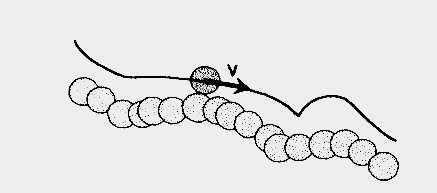Jaeger et al, Europhys Lett. 11(7) pp 619-624 (1990) • Riguidel et al, J. Phys. J France 4 (1994) 261-272
Estabilidad de un grano sobre una superficie rugosa inclinada
Configuración RSA (random sequential absortion), L = 180 r.
Esferas de vidrio de radio r = 0.5mm
Tamaño: 2m x 0.7m, C ≅ 0.7
Esferas de acero de diámetro R
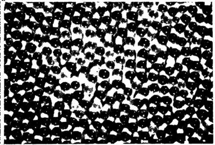Distribución acumulada \(N(\theta \leq \theta_s)\)
Suavidad: \(\Phi = \dfrac{R}{r}\)
\(\theta_s(\phi)\)
Riguidel et al, J. Phys. J France 4 (1994) 261-272
Movimiento de un grano sobre un lecho granular
Suavidad: \(\Phi = \dfrac{R}{r}\) Inclinación: \(\theta\)
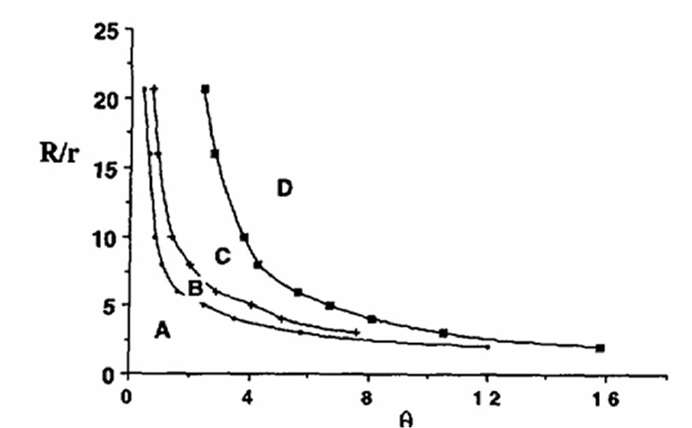Régimen A: movimiento desacelerado
Régimen B: movimiento con velocidad constante y camino libre medio menor a la longitud de sistema de 2m (entrampamiento súbito)
Régimen C: movimiento con velocidad constante y camino libre medio mayor a la longitud de sistema
Régimen D: movimiento acelerado
En el régimen de velocidad constante: la energía potencial gravitatoria que se gana se compensa con las pérdidas debidas a las colisiones y no tanto por fricción.
Riguidel et al, J. Phys. J France 4 (1994) 261-272
Movimiento de un grano sobre un lecho granular
• Sustrato de esferas de radio medio r (vidrio y arena)
• Granos libres de radio medio R (acero, vidrio y plástico)
Suavidad: \(\Phi = \dfrac{R}{r}\) \(\theta\)
Régimen A: movimiento desacelerado
Régimen B: movimiento con velocidad constante
Régimen C: movimiento acelerado
\(\theta_{A-B}\) ley de potencia \(\theta_{B-C}\) exponencial
Aguirre et al. Powder Tech., 92, 75-80 (1997)
Movimiento de un grano sobre un lecho granular
\(\theta_{AB} \propto \Phi^{-1.3}\)
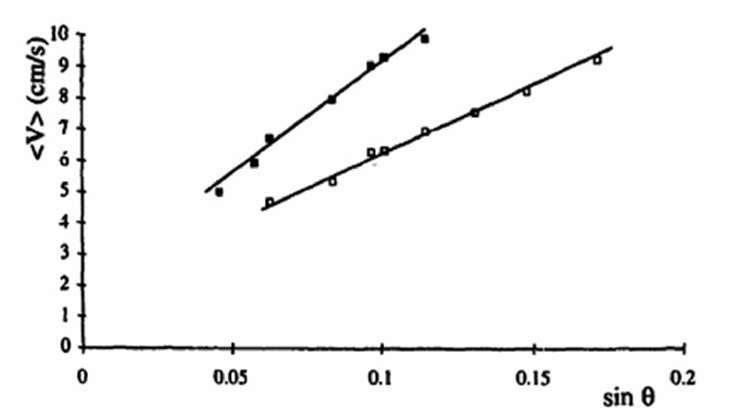\(\theta_s \propto \Phi^{-0.6}\)
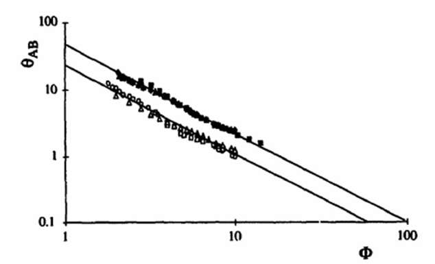\(\Phi = \dfrac{R}{r}\)
\(F_{dis} \propto \langle V \rangle\)
\(\theta_{AB}\) : es independiente de la energía cinética inicial
Estabilidad de un sistema granular
La configuración del sistema granular depende de su "historia"
Figura 1: Comportamiento de los distintos estados de agregación ordinarios (sólido, líquido y gas) y de un material granular bajo perturbación.
Se inyecta energía
• Todos vuelven a su estado inicial excepto el SG
• La configuración del sistema granular depende de su "historia"
• Al ser perturbado se comporta mas como un líquido no newtoniano que como un sólido
J. R. Darias: Acta Científica Venezolana, 65(1): 62-72, 2014
Estabilidad de un sistema granular
Principio de dilatancia de Reynolds - Taylor
En 1885 Reynolds observa que un sistema de granos con una elevada fracción de compactación envueltos por una cubierta flexible puede aumentar su volumen si este es deformado.
Video: Pierre-Gilles de Gennes
"...un medio granular altamente compactado en el interior de un envoltorio flexible incrementa su volumen cuando el envoltorio es deformado. Si el envoltorio es inextensible pero deformable la configuración del medio granular no se puede deformar a no ser que se rompa el envoltorio o se fracture el medio granular."
Estabilidad de un sistema granular — Dilatancia
\(h_H\): diagonal horizontal del romboide
\(h_V\): diagonal vertical del romboide
\(S\): área del romboide
Dentro del romboide: intersticio y material sólido.
Área del material sólido = área de un disco de radio R.
Área total ocupada:
Usando el teorema de Pitágoras: \(\left(\frac{h_V}{2}\right)^2 + \left(\frac{h_H}{2}\right)^2 = (2R)^2 \Rightarrow h_V^2 + h_H^2 = 16R^2\)
Duran, 'Sands, powders and grains', Springer.
Estabilidad de un sistema granular — Dilatancia
\[\Rightarrow\; S_T = 3\pi R^2 + \frac{h_H\sqrt{16R^2 - h_H^2}}{2} = 3\pi R^2 + 2R\,h_H\sqrt{1 - \left[\frac{h_H}{4R}\right]^2} = 3\pi R^2 + \Delta S_T\]
\(2R \leq h_H \leq 2R\sqrt{2}\)
\(\cos\alpha = \cos\frac{\pi}{6} = \frac{\sqrt{2}}{2}\)
\(S_T\) ocupada tiene dos componentes:
• superficie ocupada por los discos externos al romboide (constante)
• superficie interna al mismo (variable): disco (constante) + intersticio (variable con \(h_H\))
Estabilidad de un sistema granular — Dilatancia
Si inicialmente los discos se tocan horizontalmente (\(h_H=2R\)) y se aplica una compresión, se observa una deformación horizontal. El área del empaquetamiento interno al paralelogramo \(\Delta S_T\) aumenta (dilatancia) hasta un máximo cuando sus diagonales tienen igual valor.
\[2h_H^2 = 16R^2 \;\Rightarrow\; h_V = h_H = 2R\sqrt{2}\]
\(2R \leq h_H \leq 2R\sqrt{2}\)
No se consideró acá el grado de compactación inicial lo que afecta a la evolución de la deformación.
Si el sistema está poco compacto: se verá primero una compresión.
Estabilidad de un sistema granular — Dilatancia
Esfuerzo tangencial: \(\tau\)
Esfuerzo normal: \(\sigma_n\)
Deformación: \(\gamma\)
Si el sistema está poco compacto:
se verá primero una compresión.
Houlsby G.T. Report OUEL 1888 (1991)
Estabilidad de un sistema granular — Dilatancia
La cizalla produce la dilatancia que permite destrabar el sistema
Hartley R. & Behringer R., Nature, 421, 928 (2003)
Ángulos característicos
Al formar un apilamiento granular, la superficie libre forma un ángulo con la horizontal que crece con el agregado de material hasta alcanzar el "ángulo de máxima estabilidad o ángulo de reposo estático \(\theta_M\)".
Si se continúa agregando material a la pila se produce una avalancha que disminuye el ángulo hasta el llamado "ángulo de reposo \(\theta_R\) o ángulo de reposo dinámico".
Un ulterior agregado de material hace que el proceso se repita y que el ángulo del apilamiento oscile entre \(\theta_M\) y \(\theta_R\).
El sistema granular se comporta mas como un fluido no newtoniano que como un sólido.
Video: Pierre-Gilles de Gennes
Ángulos característicos
Un apilamiento que alcanza \(\theta_M\), se torna inestable.
\(\mu\): coeficiente de fricción interna del material granular.
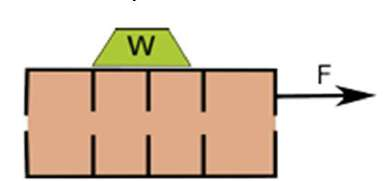\(F_R = P\,\sin\theta_R\) \(N = P\,\cos\theta_R\)
\(\Rightarrow \tan\theta_R = \frac{F_R}{N} = \mu\)
Analogamente: \(\tan\theta_M = \mu_S\)
Para fluir: vencer fricción + dilatarse en \(\Delta\theta\):
\(\theta_R + \Delta\theta = \theta_M\)
\(\theta_R = \varphi\) es el ángulo de fricción interna
Vale para empaquetamientos poco compactos.
Experimento de cizalla:
\(F = \mu\,N \;\Rightarrow\; \tau = \mu\,\sigma_n\)
Expresión mas general (con dilatancia y cohesión):
\(\frac{\tau}{\sigma'} = \tan\varphi' = \tan(\varphi + \Psi)\)
\(\Psi\): ángulo de dilatancia \(\sigma'\): esfuerzo normal efectivo
Duran, Springer • Metcalf, Int. J. Rock Mech. (1966) • Staron et al, J. Rheology (2023)
Ángulos característicos
• \(\theta_M\) : ángulo de movimiento o máximo de estabilidad (avalancha)
• \(\theta_R\) : ángulo de reposo, \(\theta_R \lt \theta_M\)
• \(\delta = \theta_M - \theta_R\) : ángulo de relajación (2° para granos esféricos)
Biestabilidad entre \(\theta_R \lt \theta \lt \theta_M\)
• Si \(\theta\) aumenta y \(\theta_R \lt \theta \lt \theta_M\) ⇒ sistema en reposo
Cuando \(\theta = \theta_R\) el sistema alcanza una situación inestable pero aún debe dilatarse para poder fluir ⇒ al aumentar \(\theta\) en \(\delta = 2°\), aumenta la fuerza de cizalla (\(mg\,\sin\theta\)) que permite el proceso de dilatación.
• Si \(\theta\) disminuye y \(\theta_R \lt \theta \lt \theta_M\) ⇒ sistema fluyendo
⇒ cuando \(\theta = \theta_R\), el sistema puede estar en reposo o fluyendo
⇒ Podría definirse un único ángulo crítico: \(\theta_M\)
⇒ Aunque a veces se indica que hay 2 ángulos críticos: \(\theta_M\) y \(\theta_R\)
Ángulos característicos
Fluidez
Al-Hashemi & Al-Amoudi, Powder Technology 330, 397-417 (2018)
Ángulos característicos
Importancia y áreas de interés
• En Ingeniería
-Impacta en la seguridad y en los costos de los proyectos
-Estimación de valores máximos de inclinación de masas de suelo
-Diseño de carreteras, obras hidráulicas, rellenos sanitarios
-Cálculos de empujes de tierra
-Manipulación de polvos y granos (ej. fabricación de cemento)
• Agricultura
-Diseño de silos, tolvas
-Estratificación y segregación
• Geofísica y geología
-Aparición de avalanchas
-Estratificación de suelos
• Farmacia
Caracterización de fluidez de polvos
• Entomología • Ciencia de materiales • Hidrodinámica • Simulaciones numéricas
Ángulo de reposo en el pozo de la hormiga león
Ángulos característicos
Métodos experimentales para obtener el ángulo de reposo
Importante:
Es necesario que la base genere fricción.
Las partículas pueden tener poca fricción dando lugar a ángulos de reposo pequeños.
ESTÁNDARES INTERNACIONALES: no consideran la totalidad de los factores que afectan la medición
• ASTM International (2001). ASTM C 1444-00: retirado en 2005.
• ISO 4324: Geneva, 1977.
Al-Hashemi & Al-Amoudi, Powder Technology 330, 397-417 (2018)
Ángulo de reposo
\(\theta_R\) y \(\mu\) varían si se trata de un apilamiento cóncavo o uno convexo.
Apilamiento cóncavo o interno: \(\theta_R\) se denomina ángulo de cráter \(\theta_C\)
Apilamiento convexo o externo: \(\theta_R\) se denomina ángulo de talud \(\theta_T\)
\(\theta_C > \theta_T\)
Ambos ángulos son iguales si:
• el volumen de la pila es muy grande frente al tamaño medio de los granos
• cuando el material es no cohesivo (Jenike, 1964)
| Tipo grano | Material | Áng. montaña | Áng. cráter |
|---|---|---|---|
| Esférico | Tapioca | 30° | 37.5° |
| Anguloso | Arena | 37° | 39° |
| Anguloso | Carbón | 37.5° | 41° |
Duran, Springer • Al-Hashemi & Al-Amoudi, Powder Technology 330 (2018)
Ángulo de reposo
Influencia de diferentes parámetros
No influyen en \(\theta_R\): la extensión ni la altura del apilamiento.
\(\theta_R\) es una característica intrínseca del material: de su geometría y de la forma.
\(\theta_R\) depende de la preparación del apilamiento (de su historia).
En forma generalizada podemos decir que el valor de \(\theta_R\) disminuye cuando se favorece la fluidez:
- mayor tamaño de grano
- menor rugosidad de superficie de la partícula
- mayor esfericidad de la partícula
- menor humedad del apilamiento
- mayor homogeneidad de tamaños
Ángulo de reposo — Influencia del material
Al-Hashemi & Al-Amoudi, Powder Technology 330, 397-417 (2018)
Ángulos característicos — Influencia de la composición
Se analizan muestras extraídas de 4 minas de una cementera. Se analiza la granulometría y composición química.
\(\theta_M\)
Método 1
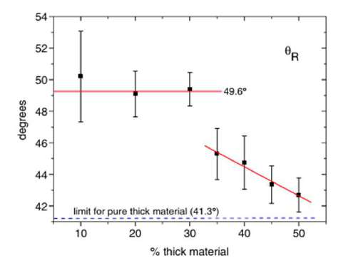\(\theta_R\)
Método 2
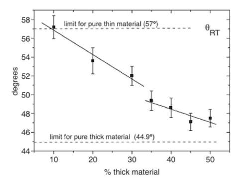\(\theta_{RT}\)
No observan influencia de:
• La composición química
• La forma de los granos (elongación y chatura): difiere de Frettes et al, donde \(\theta_R\) es menor para granos mas redondos.
Vidales et al. Powder Technology 163 (2006) • Frette et al, Nature 379 (1996) • Madrid et al, Agronomy 12 (2022)
Ángulos característicos — Tambor rotante
\(\Omega = 0.85\,\text{deg/s} = 0.14\,\text{rpm}\)
2fps
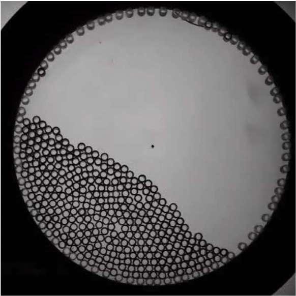300fps
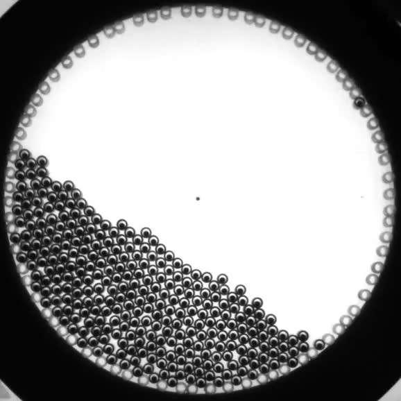Piva et al, PRE (98), 062902 (2018)
Ángulos característicos — Tambor rotante
N = 300, 40cm
Adquisición: 2Hz, 828×828px
\(\Omega = 0.85\,\text{deg/s} = 0.14\,\text{rpm}\)
Se detectaron ≅ 700-900 eventos
Ángulo de la pila: \(\theta(t)\)
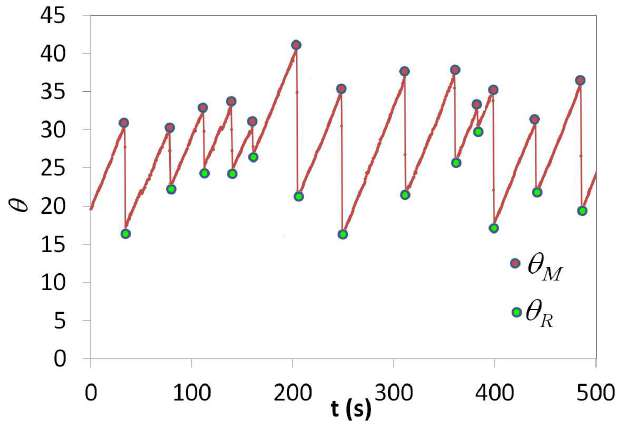Piva et al, PRE (98), 062902 (2018)
Ángulos característicos — Tambor rotante
a) Rolling: superficie plana y de avalanchas intermitentes
b) Cascading: forma S
c) Catarcting: parte de proyecta en el aire
d) Centrifuging: las partículas se fijan sobre las paredes
• Al aumentar el largo del tambor, la forma de S desaparece y se desarrolla una superficie plana.
• En tambores cortos, la forma S puede eliminarse suprimiendo la fricción en las paredes laterales.
Sack & Pöschel, Sci Rep 6, 26833 (2016) • Taberlet et al, Phys Rev E 73, 050301R (2006)
Ángulos característicos — Tambor rotante
\(\Omega \lt 0.1\,\text{rpm}\) \(\Omega \approx 5\,\text{rpm}\)
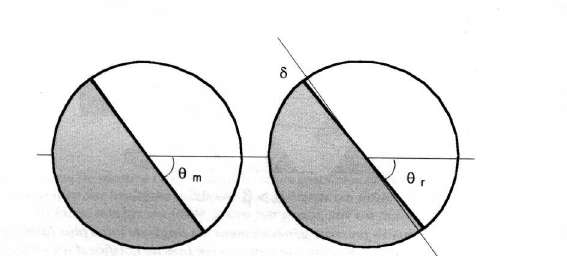Flujo intermitente \(\Omega \lt 0.1\,\text{rpm}\)
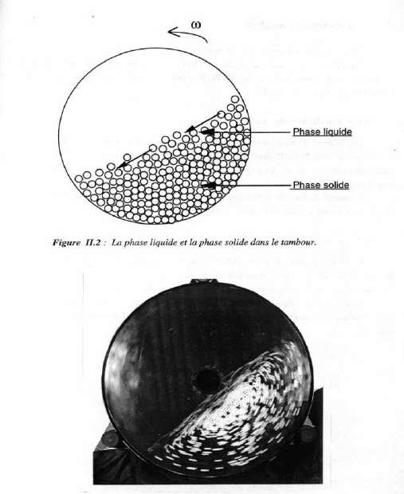TRANSICIÓN: HISTÉRESIS
Flujo intermitente ↔ Flujo continuo
\(\Omega_- = 0.25\,\text{rpm}\) \(\Omega_+ = 0.5\,\text{rpm}\)
Bajas velocidades de rotación (\(\Omega \lt 0.1\,\text{rpm}\))
Régimen intermitente: la capa superficial oscila constantemente entre \(\theta_M\) y \(\theta_R\).
La superficie libre es bastante recta y permite definir \(\theta_M\) con precisión.
Se observa un incremento lineal de \(\theta_R\) con \(\Omega\).
Duran, Springer • Rajchenbach, Phys. Rev. Lett. 65: 2221 (1990) • Taberlet et al, Phys Rev E 73 (2006)
Ángulos característicos — Plano inclinado
Avalanchas (3D)
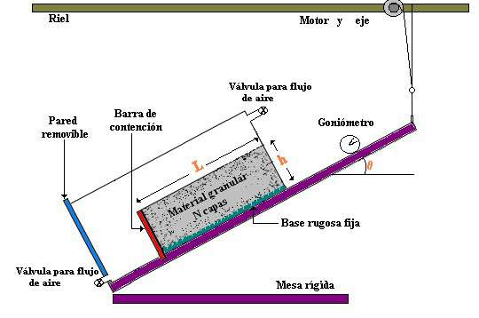Esferas de vidrio: d = 2 mm
Caja: L = 32 cm W = 25 cm
CCD: vista superior
768 × 512 pixels — 256 gray levels
\(\omega = 0.3\,°/\text{min}\)
Masa inicial = Mo = m*N
1 capa: m = 230g (\(C_1 = 0.7\))
1 capa ~ 16.000 esferas

N = 20 sistema desordenado y con superficie rugosa
\(\theta_M = 27.3° \pm 0.2°\)
\(\theta_R = 21.1° \pm 0.5°\)
\(\delta = 1.8° \pm 0.4°\)
Aguirre et al. Phys. Rev. E 62, 738-743 (2000)
Ángulos característicos — Plano inclinado
Influencia del tamaño del sistema
Para N > 13 capas: los ángulos y masa desalojados no dependen de la altura del sistema
Aguirre et al. Phys. Rev. E 62, 738-743 (2000)
Ángulos característicos — Plano inclinado
Influencia del tamaño del sistema
N = 20 capas
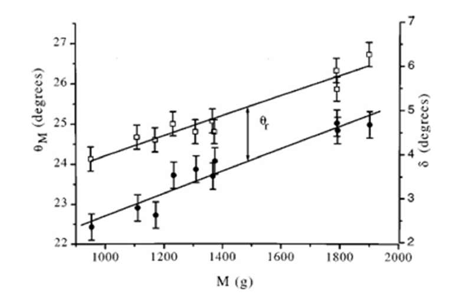N = 6 capas
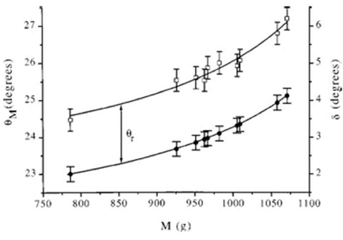M = masa desalojada por la avalancha
\(\theta_R\) es independiente de \(\theta_M\) y de la masa desalojada
\(\therefore \theta_R\) es un parámetro intrínseco del medio granular
Aguirre et al. Phys. Rev. E 62, 738-743 (2000)
Ángulos característicos — Plano inclinado
Influencia de la compactación
S = M/m, capas desalojadas por la avalancha
C= 0.62 (loose) C= 0.67 (dense)
N = 20 capas
N. Nerone et al. Physica A 283 (2000) 218-222 • Aguirre et al. Granular Matter 3, 75-77 (2001)
Ángulos característicos — Plano inclinado
Influencia de la base rugosa
Superficie de esferas de vidrio: ■ \(\langle\theta_M\rangle\) ▲ \(\langle\theta_R\rangle\)
Superficie de granos de cuarzo: □ \(\langle\theta_M\rangle\) △ \(\langle\theta_R\rangle\)
Para empaquetamientos de pocas capas no pueden distinguirse \(\theta_M\) de \(\theta_R\).
Aguirre et al. Granular Matter 3, 75-77 (2001)
Ángulos característicos — Plano inclinado
Influencia de la humedad
RH = 70% RH = 50%
Aguirre et al. Phys. Rev. E 62, 738-743 (2000)
Avalanchas y reacomodamientos — Plano inclinado
Se observan:
• Reacomodamientos superficiales: pequeños y grandes (precursores)
• Avalanchas
Tamaño de reacomodamientos vs ángulo de inclinación
El gráfico muestra que los reacomodamientos crecen progresivamente con \(\theta\) hasta la avalancha en \(\theta_M\). Se identifican los ángulos \(\theta_R\) y \(\theta_M\) en el eje de inclinación.
Nerone et al. Physica A, 283, 218-222 (2000) • Nerone et al. Physical Review E 67, 011302 (2003)
Avalanchas y reacomodamientos — Plano inclinado
Pequeños reacomodamientos
\(s \lt 3\%\) capas
Eventos localizados
Estructura random en espacio y tiempo
Origen: mecanismo local
Frecuencia depende de la rugosidad inicial de la superficie libre
N=20 C = 0.67 ± 0.01
Superficie libre rugosa
Ley de potencia
Small rearrangements, precursors y avalanches siguen la misma distribución.
Nerone et al. Physica A, 283, 218-222 (2000) • Held et al PRL, 65, 1120 (1990) • Rosendhal et al PRE 47, 1401 (1993)
Avalanchas y reacomodamientos — Plano inclinado
Precursores
\(N > 10\) capas \(0.03 \lt s \lt 1\) capa
Eventos no localizados \(\theta_o \sim 17°\)
Reacomodamiento interno de la red de contacto
N=20 C = 0.67 ± 0.01 Superficie libre rugosa
\(\Delta\theta \approx 2° \sim\) constante para N y \(\omega\) fijos
\(\Delta\theta = f(\omega, N, \text{orden-desorden})\)
Exponencial:
Nerone et al. Physica A, 283, 218-222 (2000) • Nerone et al. Physical Review E 67, 011302 (2003)
Avalanchas y reacomodamientos — Plano inclinado
Avalanchas (2D)
1 capa = 24 discos
N = No/24 (capas) altura variable h ∝ N
L = 45 cm gap = 6.5 mm
CCD: vista lateral, fija al plano
25 cuadros/s
768 × 512 pixels
\(\omega = 2.5\,°/\text{min}\)
Aguirre et al. Physica A 371, 29-32 (2006) • Aguirre et al. Phys Rev E 73, 041307 (2006)
Avalanchas y reacomodamientos — Plano inclinado
Campos de velocidad g sinθ ←
θ = 25.6°
θ = 33.9° 20 capas
- Flujo tangencial a la superficie libre
- Flujo cercano a la superficie libre
- Movimiento guiado por fallas (cerca de la superficie libre)
Avalanchas y reacomodamientos — Plano inclinado
Campo de velocidad g sinθ ←
θ = 23.4°

θ = 29.6° 20 capas
Avalanchas internas
- Ruptura de arcos o presencia de zonas de baja densidad: colapso de capas superiores
- Zonas de flujo perpendicular a la superficie libre
- Movimiento guiados por fallas
Ángulos característicos — Plano inclinado
Influencia del orden
Parámetro de orden:
Fracción de vecinos separados en \(\alpha = 60°\)
Parámetro de Orden: OP
• Ensanchamiento de la distribución
• Pico menor en \(\alpha = 60°\) indica el grado de desorden
OPordenado ≅ 0.8
OPdesordenado ≅ 0.4
Ángulos característicos — Plano inclinado
Influencia del orden
Diferencia entre la configuración final e inicial
Configuración final: después del último reacomodamiento (antes de la avalancha)
• Importante disminución del pico en \(\alpha = 60°\)
• Aumento para ángulos entre 70° y 180°
Ambos resultados indican que los reacomodamientos desordenan el sistema
Ángulos característicos — Plano inclinado
Influencia del orden
N = 20
33° < \(\theta_M\) < 41°
\(\langle\theta_M^{\text{DESORDENADO}}\rangle = 36° \pm 4°\)
\(\langle\theta_M^{\text{ORDENADO}}\rangle = 47.0° \pm 1.5°\)
OPORDENADO = 0.80 ± 0.05
desordenado ⟶ ordenado
El sistema pierde su estabilidad a ángulos mayores cuando mayor es OP justo antes de la avalancha.
Aguirre, et al. Powders & Grains 2005, Vol. 2. 823-826.
Ángulos característicos — Plano inclinado
Influencia del orden
Sistemas Desordenados
• Reacomodamientos pequeños
En la superficie y en el interior (cerca de arcos)
• Reacomodamientos grandes
\(\theta > 17°\)
Desplazamiento de cerca del 40% de los discos, incluyendo una gran porción de la superficie libre.
• Avalanchas
Tamaño del orden de los reacomodamientos grandes
Sistemas Ordenados
No hay reacomodamientos
\(\theta_M > 43°\)
Aguirre et al. Powders & Grains 2005, Vol. 2. 823-826.
Avalanchas
Métodos experimentales para obtener datos estadísticos de las avalanchas
Tamaño, duración del evento, lapso entre eventos
balanza condensador condensador micrófono
• En sistema de pocas partículas: \(\theta_M\) y \(\theta_R\) se confunden.
• En sistema de muchas partículas: \(\theta_M\) y \(\theta_R\) bien definidos.
S.R. Nagel, Rev. of Modern Physics, 64:321 (1992) • H.M. Jaeger and S.R. Nagel, Science 255, 1523 (1992)
Ángulo neutro
Esferas de vidrio: 2.2mm de diámetro
Masa de una capa: m = 230g
Para \(\theta \lt \theta_N\) : proceso de acreción de la superficie.
Para \(\theta > \theta_N\) : proceso de erosión de la superficie.
Para \(\theta = \theta_N\) : no hay acreción ni erosión de la superficie.
D. Bideau, I. Ippolito, M. A. Aguirre, A. Calvo, N. Nerone. Powders & Grains 2001, Vol. 2. 459-462.
Estabilidad de un sistema granular
Influencia de la humedad
Arena seca
Arena húmeda
Estabilidad de un sistema granular — Influencia de la humedad
Humedad relativa HR o φ
r : radio del cuello del puente de líquido

La tensión superficial entre el líquido y el sólido, junto con la presión capilar, dan lugar a las fuerzas de cohesión en el puente de líquido.
Gómez-Arriaran et al, Powder Technol. 279, 24-32 (2015)
Estabilidad de un sistema granular — Influencia de la humedad
ESTADO PENDULAR: inicio de la formación de puentes líquidos en los contactos entre granos. Las fuerzas de cohesión son débiles.
Ej: Para granos de 0.5 mm:
\(\theta_M = 27°\) (HR=37%)
ESTADO FUNICULAR: se forman zonas continuas de fase líquida. Las fuerzas de cohesión aumentan progresivamente. Aumenta la presión capilar pc.
ESTADO CAPILAR: se establece una fase líquida que conecta y cohesiona casi todo el sistema granular. Las fuerzas de cohesión aumentan bruscamente.
Ej: Para granos de 0.5 mm:
\(\theta_M = 85°\) (HR=90%)
Gómez-Arriaran et al, Powder Technol. 279, 24-32 (2015)
Estabilidad de un sistema granular
Influencia de la humedad y el envejecimiento (aging)
Descripción discreta
La pérdida de estabilidad se da a nivel de grano: el sistema de desestabiliza en la superficie.
La cohesión afecta el balance de fuerza llevando a un aumento de \(\theta_M\)
Descripción continua
esfuerzo normal efectivo: \(\sigma'_n = \sigma_n + \sigma_c\)
\(\frac{\tau}{\sigma'_n} = \mu = \tan\varphi'\)
Si aumenta el volumen: \(\sigma_n\) aumenta y \(\sigma_c\) es constante (independiente del tamaño del sistema).
El sistema de desestabiliza en la base.
Gómez-Arriaran et al, Powder Technol. 279, 24-32 (2015) • Gottfried, Tesis de grado, Fac. Ingeniería-UBA, 2024.
Estabilidad — Influencia de la humedad y el envejecimiento
ESTADO PENDULAR Y FUNICULAR
El sistema de desestabiliza en la superficie
HR = 94%
ESTADO CAPILAR
El sistema de desestabiliza en la base.
Gómez-Arriaran et al, Powder Technol. 279, 24-32 (2015)
Estabilidad de un sistema granular — Influencia de la humedad
Estado pendular: \(\theta_M\) y \(\theta_R\) permanecen aproximadamente constantes y similares al estado seco.
Estado funicular: \(\theta_M\) crece exponencialmente con HR
\(\theta_R\) aproximadamente constante
Gómez-Arriaran et al, Powder Technol. 279, 24-32 (2015)
Estabilidad de un sistema granular — Influencia de la humedad
• En el estado pendular, \(\theta_M\) y \(\theta_R\) permanecen aproximadamente constantes y similares al estado seco... y son casi independientes del tamaño de grano.
• La HR de transición entre los diferentes estados: aumenta con el tamaño de grano.
Gómez-Arriaran et al, Powder Technol. 279, 24-32 (2015)
Estabilidad de un sistema granular
Influencia de la humedad y el envejecimiento (aging)
En el estado pendular: \(\theta_M\) y \(\theta_R\) permanecen constante con una diferencia de 5° ± 1°.
En el estado funicular: \(\theta_M\) crece exponencialmente con HR.
En el estado capilar: \(\theta_M\) alcanza su máximo de forma abrupta.
La HR de transición entre los diferentes estados: aumenta con el tamaño de grano.
Tiempo de equilibrio higroscópico: período necesario para que el sistema granular alcance un estado de equilibrio en su contenido de humedad. Depende del tamaño y geometría del grano, de HR, de la superficie libre y compactación.
En el equilibrio higroscópico \(\theta_M\) alcanza su máximo valor y permanece constante
⇒ se lo denomina ángulo nominal de máxima estabilidad.
Gómez-Arriaran et al, Powder Technol. 279, 24-32 (2015)
Estabilidad — Influencia de la humedad y el envejecimiento (aging)

Tiempo entre avalanchas: 5 minutos
grano 1 mm
Tiempo entre avalancha 1ª y 2ª: 24 h
Gómez-Arriaran et al, Powder Technol. 279, 24-32 (2015)
Estabilidad — Influencia de la humedad y el envejecimiento (aging)
Ángulo de relajación \(\delta = \theta_M - \theta_R = \Delta\theta_{m-r}\)
grano de 1 mm
grano de 0.5 mm
\(\theta_R\) aproximadamente constante. Si el sistema se desestabiliza a un \(\theta_M\) mayor, ⇒ hay una avalancha que desplaza mas masa ⇒ \(\delta = \theta_M - \theta_R\) es mayor.
\(\delta = 2°\) para granos esféricos secos y sin tiempo de espera.
Estabilidad — Influencia de la humedad y el envejecimiento (aging)
grano de 1 mm, 5 min entre avalanchas
grano 0.5 mm
En equilibrio higroscópico (1 semana, 94%)
Aun no llega al equilibrio (2 días, 94%)
Gómez-Arriaran et al, Powder Technol. 279, 24-32 (2015)